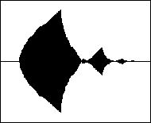

Wavelets are mathematical functions that can process complex data and facilitate the extraction of significant features by representing the data in frequency-space domain. Perhaps their most interesting characteristic is that the analyzed signals can be inspected simultaneously in several scales, giving us a coherent means of detecting both localized, small scale behavior, and broad range, gross properties. This analysis over several scales, is known as a Multi-Resolution Analysis.
When compared with Fourier techniques, wavelets have some similarities, as well as some advantages. They are both linear operations, with comparable computational expense, and there are fast window-type methods to perform both the FFT (Fast Fourier Transform) for Fourier analysis, and the FWT (Fast Wavelet Transform) for wavelet analysis. Both methods use convolution techniques to process a window of values (with size a power of two), and generate another window of data of the same size. Additionally, the transformation is performed in place (using the same array of data where the original signal was stored, to write the transformed signal), which makes both methods very neat and economic.
Where wavelets excel, is in the representation of the transformed signals. While in the case of FFT, the representing signals are sines and cosines, in the wavelet case this signals are special functions called mother wavelets. The big difference resides in the fact that while the representing signals for Fourier analysis are not localized in space (although they are in frequency), the wavelet basis are localized both in space, and in frequency domains. Also, the base functions are not a short set, as with Fourier's sines and cosines, but rather there is an infinity of wavelets that can be used (even if most of them are of no particular use). One of the most important wavelet basis are the ones found by Ingrid Daubechies. Its smallest (and more compact) element has only four coefficients, and is known as DAUB4. In general, the wavelet basis range from highly localized, rough wavelets, to very smooth, wide spread ones. An obvious tradeoff must be made, between smooth and compact.
The easiest way I found so far, to understand wavelet transform's principles, is described in Wim Sweldens and Peter Schroder's paper 'Building Your Own Wavelets at home'. We start by taking an example signal just two samples long. Lets call these samples u and v. A simple linear transform that would let us look at this short signal in other ways, would be to replace these samples by both their average (a) and their difference (d), like this:
a = (u + v) / 2
d = v - u
This is a completely reversible process, since we can at any time recover the original signal, using:
u = a - d / 2
v = a + d / 2
Now, if the original signal was not too rapidly changing (if it was a smooth signal), then probably the difference will be a very small value, and replacing it with zero (better yet, discarding it entirely), will not yield significant changes, when reconstructing the signal back, by the above method. Therefore, we have a means of representing a signal that was initially 2 samples long, by using fewer samples.
The wavelet transform achieves this same goal over a vector of samples, using a couple of FIR filters: a low-pass filter (H) for the sum (s), and a high-pass filter (G) for the difference (d). These filters are specially related to each other to form what is called a quadrature mirror pair. The signal passes through the filter pair, and results in a vector of the same length, but in which half the values will be the detail coefficients, resulting from the high-pass filter, and the other half will be smooth coefficients, from the low-pass filter output. The output of each filter is a signal the same length of the original, so, in order to fit both smooth and detail data in a vector of the same length, half the coefficients (every other one) is discarded, through a process known as decimation (downsampling by half - the frequency range of the filtered signal will be half of the original, so according to Nyquist, half the samples are enough to fully describe the signal). Then, after sorting the interleaved smooth and detail coefficients, into their own half of the signal table, the same quadrature filter pair is again applied to the signal, but only to the smooth half, resulting in a smooth-smooth quarter and a smooth-detail quarter (remember we preserved the other half, with the detail coefficients). The details are always preserved, and the smooth part is consecutively double-filtered until only a trivial number of smooth-smooth-smooth-... coefficients remains (usually 2). As I said, the process is completely reversible.
So, what have we gained by doing so? Well, hopefully, the signal will exhibit some coherent behavior over time, and will have some smooth evolution. In this case, the detail coefficients, will be very small, and rounding them off, wont have a big impact in the reconstructed signal. In fact, if the signal is not too wild, we can simply discard all coefficients below a certain threshold, and the inverse wavelet transformation will still regenerate a signal very much like the original. So, using the wavelet transform, we can use less space to store a given signal, and still preserve its significant features. This provides a method for data compression, which is one of the primary applications for wavelets. The compressing ratio, will be higher for smooth signals, and furthermore, the wavelet basis should be chosen in a way as to maximize the number of near-zero detail coefficients. That way, a larger number of coefficients can be discarded.
Additionally, each successive application of the algorithm, reveals the signal's shape, being analyzed at increasingly coarser resolutions. At each application of the filter pair, we analyze data one octave down, thus by controlling the depth of the transform, we can observe data at various levels of detail, or at various resolutions. An analogy can be made with those gradual-downloading images we see on the net (block DCT, or JPEG format): at first only the smooth-smooth-smooth-... coefficients (which are very few) are sent, resulting in a picture made of big averaged blurs of color, and a very crude detail, but as the transmission proceeds, each new set of coefficients (every step up the number of coefficients increases by a factor of 2) is also sent, resulting in successive increases in definition, until all the detail of the original picture, finally emerges.
The algorithms we'll be using, simple as they are, suffer from a limitation, usually taken as problematic. For the sake of simplifying the formulation and the implementation of the algorithm, the signal is assumed to be periodic, so that in a window of samples, the beginning and ending of the signal have the same amplitude. This simplifying assumption has no effect over the wave packet synth instrument, but when dealing with the fast wavelet transform, and since our signals will hardly fit the periodicity requirement, we will get 'glitches' on the window boundaries, when we reconstruct the signal (you'll have a chance of confirming that for yourself, once we study the FWT instrument). This is an inconvenience, and several methods have been used to overcome it. Developing an aperiodic wavelet transform instrument, is unfortunately beyond the scope of this introductory paper, so I invite the curious reader to check some of the solutions that have been proposed, using the links provided in the reference section.
Wave packets are a generalization of wavelets. If, when calculating the wavelet transform, not only we apply the filter-pair to the smooth coefficients, but also to the detail coefficients, and proceed recursively, expanding the wavelet tree in all directions, instead of just down to the left, as in the plain wavelet case, we arrive at the wave-packet tree:
Shown in bold, are the operations (sum and difference) required to calculate the wavelet transform part of the tree. Expanding the whole tree leads to many basis wavelet packets (of which the wavelet transform is a particular case), each one sufficient to regenerate the original signal. Not all wave packets are equally suited for a particular application, so one must choose the best wave-packets (the best-basis) to represent the problem at hand.
Wickerhauser suggested that wave packets could be used in the synthesis of audio signals. Specifically, if we anticonvolved a signal made of a single one, and the remain with zeros, the result would be a sonic burst in the time domain (a toneburst). Different wave packets would produce different tones, and by experimentation, a musician could choose the more appropriate. Since the algorithm is so fast, this could replace a large number of oscillators.
Another application, would be as a sample compression tool, to be used in sampler-type instruments. Instrument samples could be compressed using appropriate wave packets, and the coefficients stored. During performance it would suffice to load the coefficients into a wave-packet generator, which would then recreate the original sound. Other aspects of the particular instrument, like timbre dynamics, could be mimic by using amplitude and filter envelopes. Alternatively, longer packets could be used and these characteristics encoded in the wave-packets themselves.
A very effective application, consists of the denoising of noisy data. Since the wavelet transformation decomposes the input signal into average and detail coefficients, and since these detail coefficients correspond to the details, or sharp edges, of the signal, one can perform denoising by simply rounding the small coefficients off. In fact, simply setting to zero all detail coefficients that lie below a predetermined threshold, can have a great effect in eliminating noise from a given source, without compromising general characteristic behavior of the data.
This is the familiar graph obtained by using Daubechies' filters (in this case DAUB4). These wavelet basis have a fractal nature, and exhibit self-similarity when closely inspected.
Here's a more complex (but rather uninteresting) toneburst, using a Coifman filter, and a different sequence of H's and G's
More appealing tonebursts can be generated with some experimentation with the type of filter and the filter sequence:

These pictures were all obtained with the WPT.ORC and WPT.SCO instrument we'll study right away.
0. Index 1. Intro 2. Mathematica code 3. WPT 4. FWT 5. References